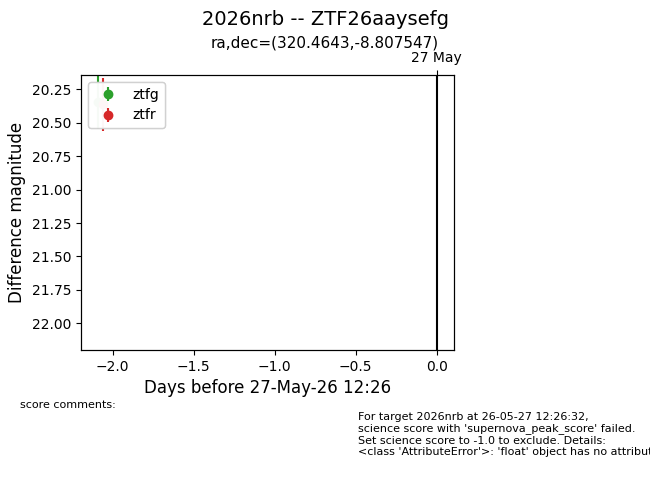
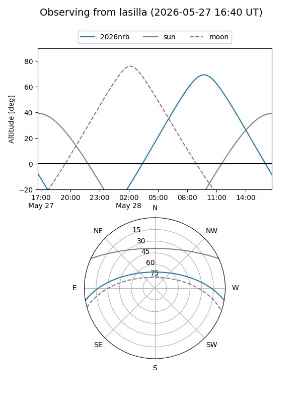
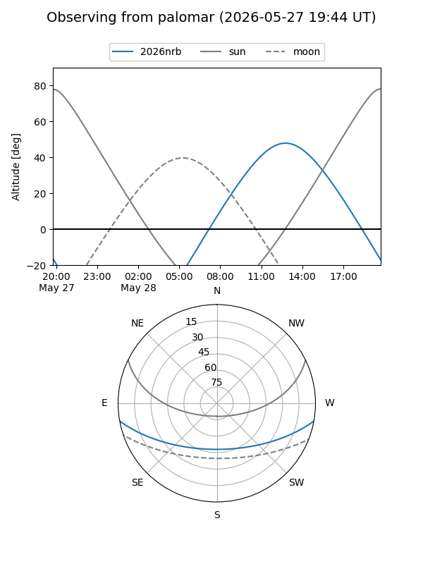

2026nrb
Target 2026nrb at 2026-05-27 12:27
Aliases and brokers:
lsst-FINK: link
lsst-Lasair: link
lsst-ALeRCE: link
ztf-FINK: link
ztf-Lasair: link
ztf-ALeRCE: link
TNS: link
YSE: link
alt names
ZTF26aaysefg (ztf,fink_ztf)
2026nrb (tns,yse)
Coordinates:
equatorial (ra, dec) = 320.4643,-8.80755
equatorial (HMS+DMS) = 21:21:51.43,-08:48:27.17
galactic (l, b) = (42.9779,-37.33654)
Flags:
TNS confirmed: nan
Photometry:
last ztfg=20.34, ztfr=20.36
1 ztfg, 1 ztfr detections
Lightcurve

Visibility


Additional plots